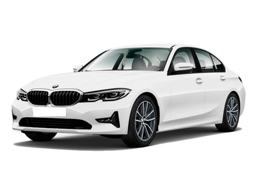

BMW 320i 2022
A Partir De R$185.800,00Para Mais informações:
Descrição do Carro
O BMW 320i 2022 é um sedã de luxo que representa o equilíbrio perfeito entre desempenho dinâmico, conforto sofisticado e tecnologia avançada. Parte da icônica Série 3 da BMW, o 320i oferece uma experiência de condução refinada e envolvente, ideal para quem busca um veículo que se destaca tanto na cidade quanto em viagens longas.